채널: AgentOS | 길이: 4:34 | 날짜: 20260619
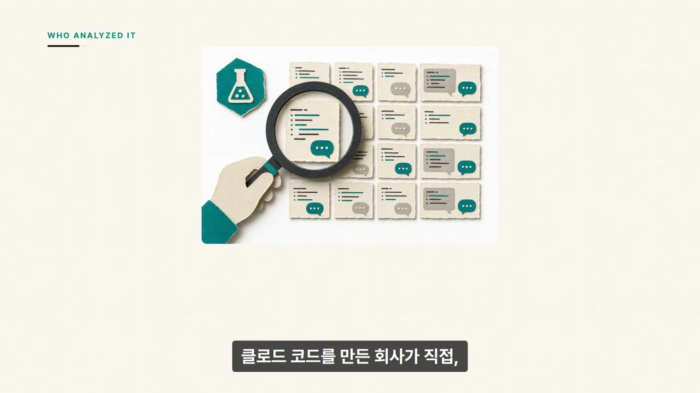
영상은 “코딩을 잘하면 AI 코딩도 잘할 것”이라는 자연스러운 가정에서 시작한다. 그러나 앤트로픽의 40만 Claude Code 세션 분석은, AI에게 일을 잘 시키는 능력이 코딩 실력과 동일하지 않다고 말한다. Claude Code를 만든 회사가 직접 23만5천 명 규모의 사용자 데이터를 7개월 동안 분석했다는 점에서, 이 주장은 단순한 체감담이 아니라 실제 사용 패턴을 바탕으로 한다. 도입부의 핵심은 AI 에이전트 시대에 살아남는 사람은 “코드를 직접 많이 아는 사람”만이 아니라 “AI가 수행할 일을 정확히 정의하고 판단할 수 있는 사람”이라는 문제 제기다.
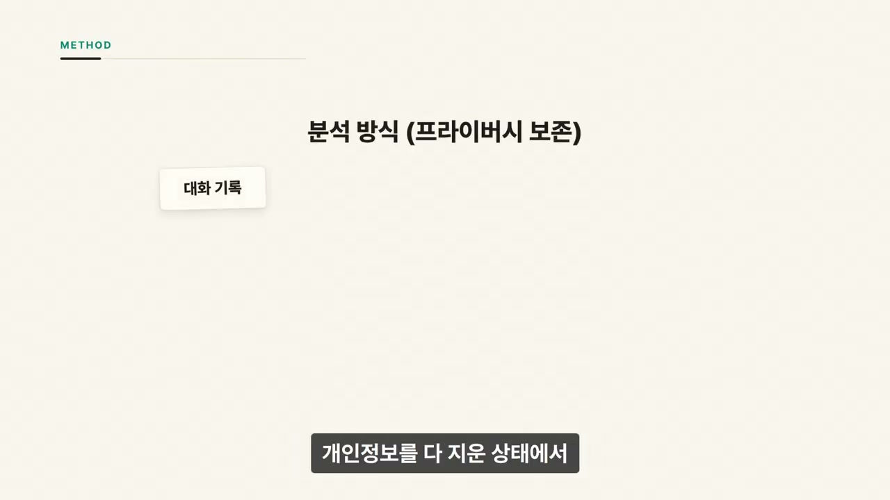
보고서는 사람이 사용자의 대화 기록을 직접 들여다본 방식이 아니다. 개인정보를 제거한 상태에서 AI가 세션 기록을 분류했고, 누가 누구인지 모르는 채 통계만 뽑았다. 이 절차는 프라이버시를 보존하면서도 대규모 사용 흐름을 볼 수 있게 한다. 분석 항목은 사용자가 Claude Code로 어떤 작업을 하는지, 작업 중 결정을 누가 내리는지, 최종적으로 성공했는지를 파악하는 데 맞춰져 있다.
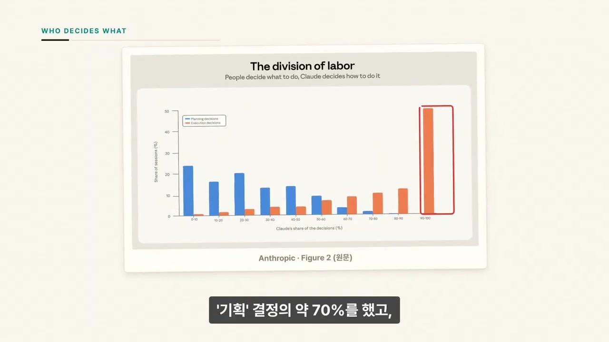
가장 중요한 발견은 “누가 무엇을 결정하는가”다. 보고서는 모든 결정을 기획 결정과 실행 결정으로 나누었다. 기획 결정은 무엇을 만들지, 목표가 무엇인지, 범위를 어디까지로 할지, 다른 선택지가 있는지 정하는 판단이다. 실행 결정은 어떤 파일을 읽고 수정할지, 어떤 코드를 작성할지, 어떤 명령을 실행할지 같은 구체적 수행 판단이다. 평균적으로 사람은 기획 결정의 약 70%를 했고, 실행 결정은 Claude가 약 80%를 맡았다.
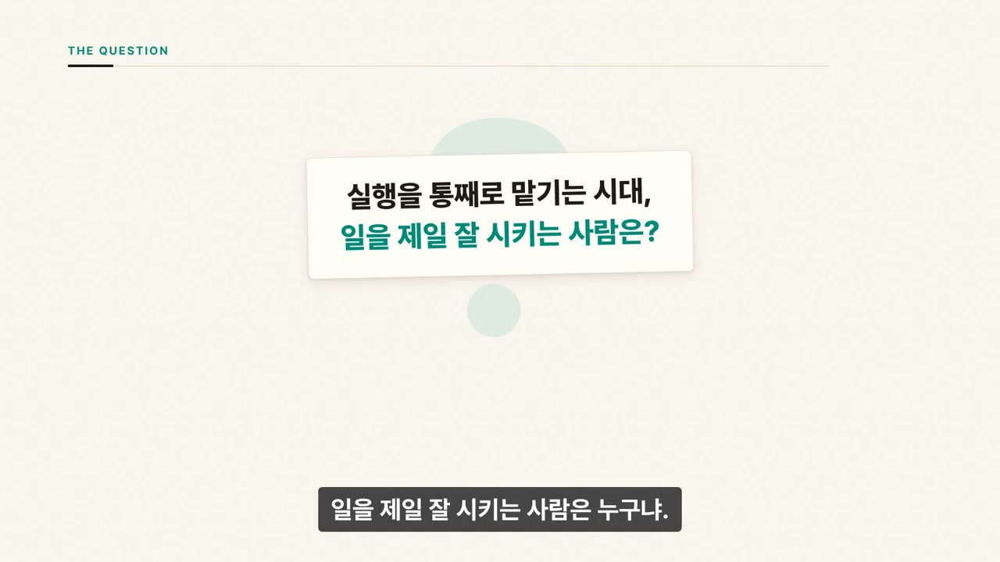
발표자는 이 분업을 집짓기에 비유한다. 집주인은 무엇을 지을지 정하고, 시공팀은 그것을 어떻게 지을지 정한다. Claude Code는 바로 그 시공팀에 해당한다. 사람이 프롬프트 하나를 던지면 Claude는 평균 10여 개 행동을 수행하고, 파일을 읽고, 고치고, 명령을 돌리며, 많을 때는 100개가 넘는 행동을 이어간다. 따라서 AI 에이전트 시대의 질문은 “누가 코드를 가장 잘 치는가”가 아니라 “누가 일을 가장 잘 맡기는가”로 이동한다.
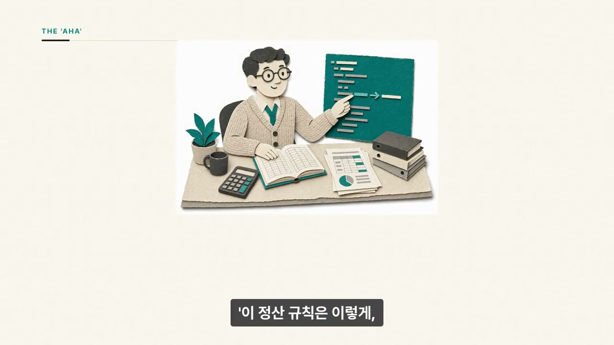
보고서는 각 세션의 전문성을 초보부터 전문가까지 5단계로 매겼다. 여기서 전문성은 직함, 경력, 일반 지능이 아니다. 바로 그 작업에 대한 전문성, 즉 지시가 정확한지, 검증 기준을 알고 있는지, AI가 틀렸을 때 바로 잡을 수 있는지를 뜻한다. 10년 차 시니어 개발자라도 생소한 Rust 작업을 두루뭉술하게 물으면 그 대화에서는 초보로 분류될 수 있다. 반대로 Python을 모르는 회계사라도 정산 규칙과 월말 마감 예외를 정확히 지시하고 오류를 잡아내면 그 작업에서는 전문가가 된다.
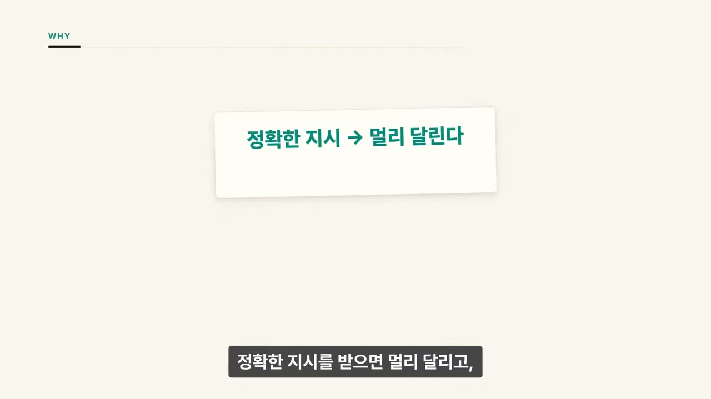
영상의 회계사 예시는 핵심 메시지를 가장 잘 보여준다. Python을 못해도 회계 업무의 정상 규칙과 예외를 알고 있으면 Claude가 만든 결과를 검증할 수 있다. “월말 마감 예외를 놓치면 안 된다”처럼 중요한 업무 조건을 명확히 알려주면 AI는 더 정확히 움직인다. 반대로 프로그래밍을 잘해도 해당 업무의 판단 기준을 모르면 AI가 만든 결과가 맞는지 확신하기 어렵다. 전문성은 결국 AI가 헤맬 때 올바른 방향으로 다시 끌어오는 능력이다.
영상은 김범수가 음악 생성 AI로 음악을 만드는 장면을 예로 든다. 발표자는 원본 중 프롬프트를 짜는 부분만 발췌 편집했다고 설명한다. 그 장면에서 김범수는 구성, 디테일, 템포 90, 발라드보다 약간 빠른 느낌, 여자 키 같은 음악적 조건을 구체적으로 짚는다. 중요한 점은 그가 음악을 알기 때문에 AI에게 원하는 결과의 조건을 정확히 설명할 수 있다는 것이다. 코딩 도구든 음악 AI든, 분야를 아는 사람이 지시할수록 결과 품질이 올라간다는 논리다.
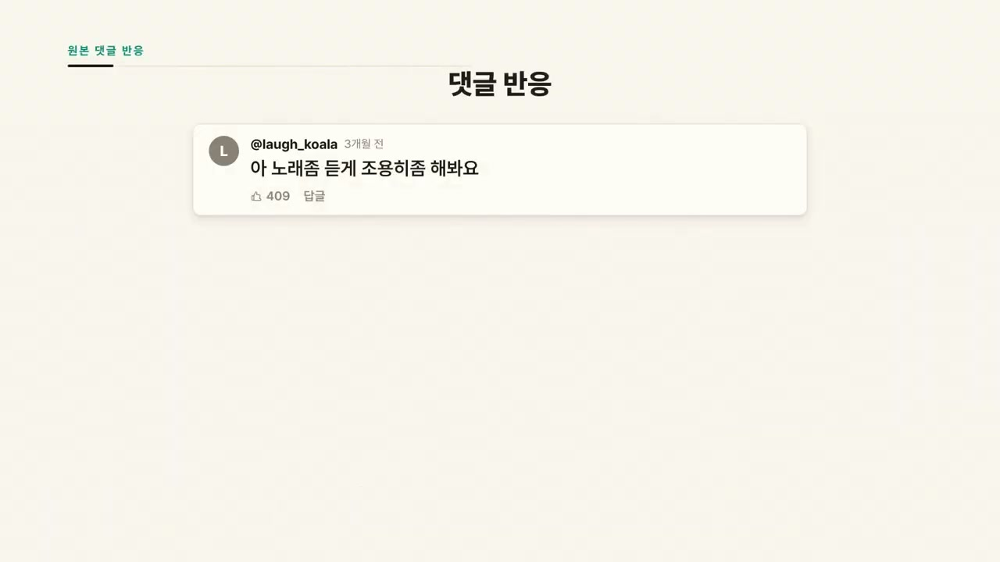
김범수 사례에 대한 댓글 반응은 발표자의 주장을 보조한다. 노래가 나오자 사람들은 설명보다 결과물을 더 듣고 싶어 했고, “노래 좀 듣게 조용히 해봐요” 같은 댓글에 많은 좋아요가 붙었다. 풀버전을 요청하는 반응도 있었다. 발표자는 이 반응을 “AI는 분야 전문가가 갔을 때 퀄리티가 미친다”는 식으로 해석한다. 회계사도, 김범수도, 각자의 분야를 알기 때문에 AI에게 정확히 시킬 수 있다는 점에서 같다.
보고서의 진짜 핵심 중 하나는 전문성이 높을수록 프롬프트 하나에 Claude가 더 많은 일을 한다는 점이다. 초보는 평균 5번 행동과 약 600단어 결과물에 그쳤다. 전문가는 평균 12번 행동과 약 3,200단어 결과물을 만들었다. 행동은 두 배 남짓이지만 결과물은 다섯 배 수준으로 커진다. 정확한 지시를 받으면 AI는 멀리 달리고, 애매한 지시를 받으면 멈춰서 되묻는다.
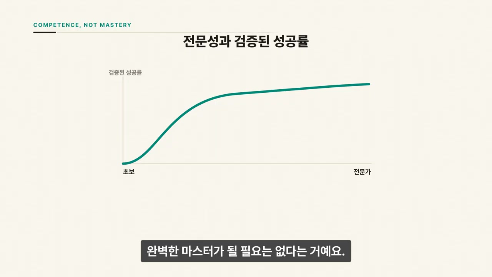
성공률도 전문성과 함께 올라갔다. 보고서는 성공을 느슨하게 보지 않고, 커밋이나 PR 같은 작업 흔적, 테스트 통과, 사용자의 직접 확인 같은 기준으로 “검증된 성공”을 판단했다. 초보 세션의 검증된 성공률은 15%였다. 중급 이상은 28~33%로, 초보보다 두 배 이상 높았다. 다만 완벽한 마스터가 될 필요는 없고, 초보에서 중급으로 올라가는 구간에서 대부분의 이득을 이미 가져간다는 점이 중요하다.
일이 꼬였을 때 차이는 더 분명해진다. 초보는 막히면 19%가 그냥 포기한다고 설명된다. 나머지 숙련도 그룹은 포기율이 5~7% 수준에 그친다. 이는 전문성이 초기 프롬프트 작성 능력만을 뜻하지 않는다는 의미다. AI가 엉뚱한 방향으로 가거나 멈췄을 때, 무엇이 잘못됐는지 파악하고 다시 올바른 방향으로 이끄는 능력이 전문성의 핵심이다.
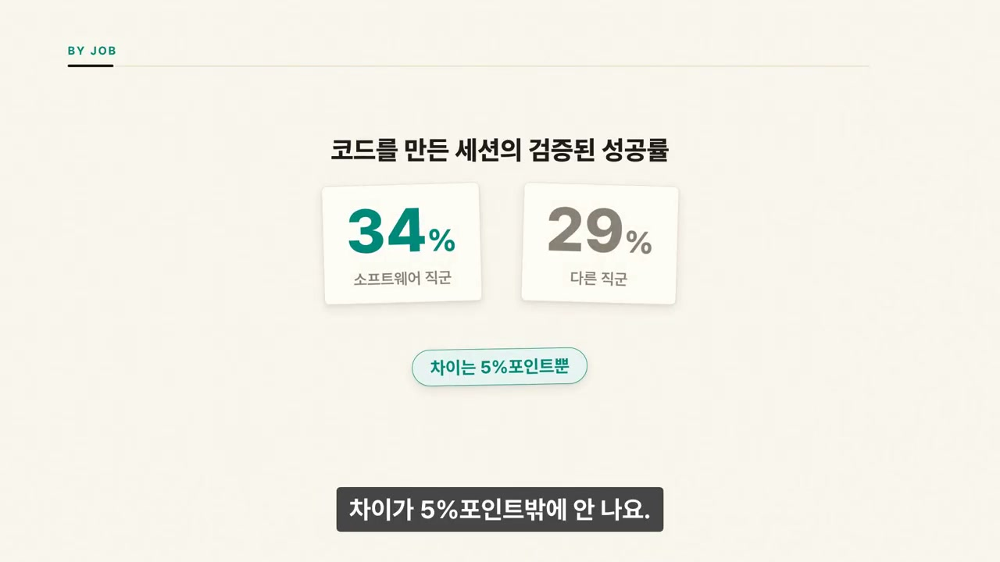
“그래도 개발자가 제일 유리하지 않나?”라는 질문에 보고서는 의외의 답을 준다. 실제 코드를 만든 세션만 봤을 때 소프트웨어 직군의 검증된 성공률은 34%, 다른 직군은 29%였다. 차이는 5%포인트에 불과하다. 상위 10여 개 직업군도 엔지니어와 7%포인트 안쪽의 차이였고, 성공률 1위는 개발자가 아니라 관리직이었다. 이는 사람에게 일을 위임하고 명확히 지시하는 능력이 AI에게 일을 맡기는 데도 그대로 유효하다는 해석으로 이어진다.
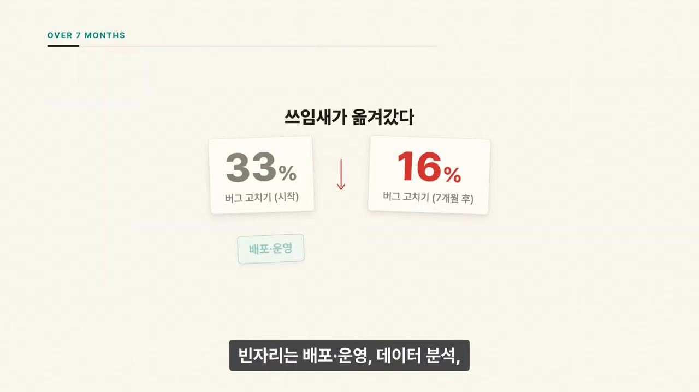
7개월 동안 Claude Code의 쓰임새도 바뀌었다. 버그 고치기 비중은 시작 시점 33%에서 자막 기준 19%, 스크린샷 기준 16%로 줄었다. 대신 배포·운영, 데이터 분석, 문서 작성이 그 빈자리를 채웠다. 이는 AI 코딩 도구가 단순히 코드를 짜주는 보조 도구에서, 일을 처음부터 끝까지 처리하는 에이전트형 도구로 이동하고 있음을 보여준다. 같은 도구로 더 값진 일을 하게 되면서 작업 한 건의 평균 가치도 7개월 만에 27% 올랐다고 설명된다.
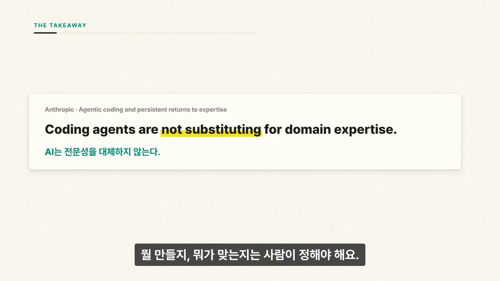
발표자의 결론은 명확하다. AI는 코딩이라는 기술을 점점 대신해 주고 있어서, 코딩 배경이 없어도 기술적인 일을 해낼 수 있는 길을 넓힌다. 그러나 AI는 판단을 대신하지 못한다. 무엇을 만들지, 무엇이 맞는지, 어떤 결과가 좋은지는 사람이 정해야 한다. 판단의 질은 코딩 실력이 아니라 자기 분야를 얼마나 깊이 아는지에서 나온다. 따라서 AI는 전문성을 대체하는 것이 아니라, 잘 아는 사람의 전문성을 증폭한다.
“AI한테 일을 잘 시키는 능력은 코딩 실력이 아니었습니다.”
“사람이 기획 결정에 약 70%를 했고, 실행 결정은 80%를 Claude가 했어요.”
“Claude Code가 딱 그 시공팀이에요.”
“직함이나 똑똑함이 아니에요. 바로 그 작업에 대한 전문성이에요.”
“전문성이 높을수록 프롬프트 하나에 더 많은 일을 해요.”
“AI는 전문성을 대체하는 게 아니라 증폭시켜요.”
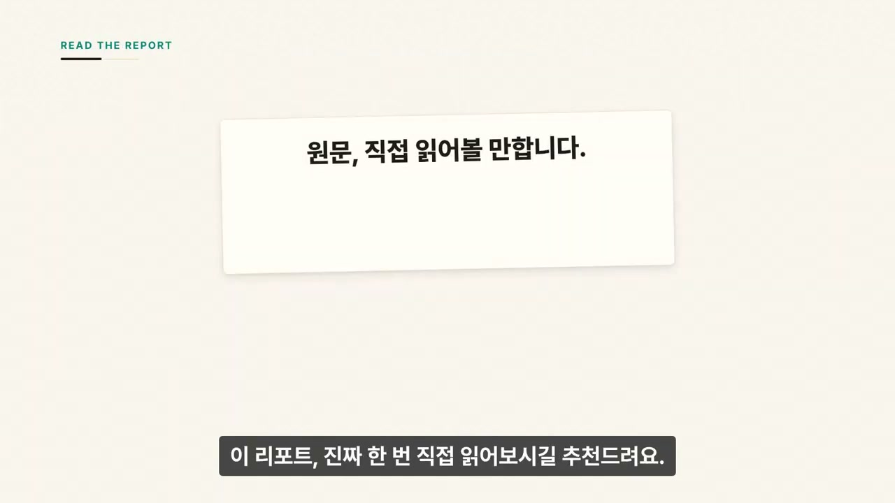
이 영상의 실용적 결론은 “AI 코딩을 잘하려면 코딩만 공부하라”가 아니다. 더 중요한 것은 자신이 해결하려는 문제의 기준, 예외, 성공 조건, 검증 방법을 명확히 아는 것이다. AI에게 맡길 때는 목표, 범위, 제약, 도메인 규칙, 검증 기준을 구체적으로 줘야 한다. 코딩 지식은 여전히 도움이 되지만, AI 에이전트 시대에는 그것이 유일한 우위가 아니다. 앞으로 경쟁력은 “직접 실행력”보다 “정확한 위임, 도메인 판단, 결과 검증, 오류 수정”에서 더 많이 나온다. 완벽한 전문가가 될 필요도 없다. 초보를 벗어나 제대로 아는 수준만 되어도 성공률의 대부분을 가져갈 수 있고, 잘 아는 사람이 AI를 만나면 이전에는 엄두도 내지 못한 일까지 해낼 수 있다는 것이 영상의 핵심 메시지다.
댓글
GitHub 이슈 기반 댓글 시스템입니다.